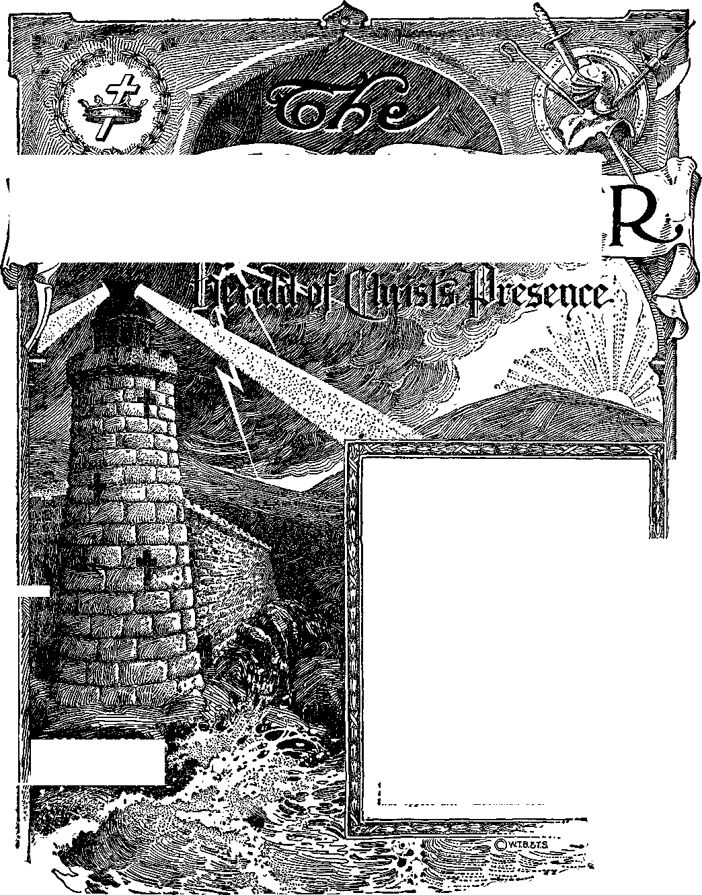

I*
Anno Mundi 6056—July 15, 1928
CONTENTS
NO. 14
'i
..222 .222 ..224 ..210 ..210
'WrCHIQW
^m^asada}^^ a!s@F~Isaial;
Vol.. XLIX
Semi-Monthly
, ROCK OF AGES Othe’’foundation can j , no m.an lay - '
A RANSOM FOR ALL z*
Fixed Periods of Time.......
“Until” ...............................
When ...................................
“The Lord’s Day’* .............
“Henceforth” .....................
Increasing Opposition.......
Mountains of God : Sinai ...
Mountains of God : Zion ...
The Convention...................
Letters from Afield.........
Radio Arousing Interest.. “A Lesson” ......................
Radio Service.....................
A New Book.........................
Vacation .________________________
....211 ....211 ....212 ...213
....214 ....215 ....216 ....218
....221
“I will stand upon my watch and will set my foot upon.the Tower, and will watch to see what He will say unto me, and what answer I shall make to them? that oppose me,”—Habakkuk S;i,
Upon the earth distress of nations, with perplexity; the sea and the waves [the restless, discontented] r°arins; hearts fail ng .. for fear, and for looking after those things which are coming on the earth: for the powers of heaven shall be shaken. . . . When things begin to come to pass, then know that the Kingdom of God is at hand. Look up» and lift up your heads; for your reaemp n draweth nigh.—Luke 21:25-31; Matthew 24: 331 Mark 13 :29.
THIS JOURNAL AND ITS SACRED MISSION
THIS journal is published by the Watch Towed Bible and Tract Society for the purpose of aiding the people to understand the divine plan. It provides systematic Bible study in which all its readers may regularly engage. It gives announcement of the visits made to Bible classes by traveling speakers, announces conventions, and gives reports thereof. It announces radio programs and publishes suitable Bible instruction for breadeasting.
It adheres strictly to the Bible as God’s revealed Word of Truth. It stands firmly upon the great ransom sacrifice as the fundamental doctrine by which all doctrines are measured. It is free from parties, sects and creeds of men. It does not assume a dogmatic attitude, but confidently invites a careful examination of its utterances in the light of the infallible Word of God. It does not indulge in controversies, and its columns are not open to personalities.
TO US THE SCRIPTURES CLEARLY TEACH
THAT JEHOVAH is the only true God, the Maker of heaven and earth, and is from everlasting to everlasting; that the Logos was the beginning of his creation; that the Logos became a man; that he is now the Lord Jesus Christ In glory, clothed with all power in heaven and earth.
THAT GOD created the earth for man, created perfect man for the earth and placed him upon it; that man wilfully disobeyed God’s law and was sentenced to death; that by reason of Adam’s wrongful act all men are born sinners and without the right to life.
THAT JESUS was made a human being in order that he might become the Redeemer of man; that he gave his life a sacrifice for man and thereby produced the ransom price; that Jesus the divine arose from the dead, ascended into heaven, and presented the value of his human sacrifice as the redemptive price for man.
THAT for many centuries God, through Christ, has been selecting from amongst men the members of his church, which constitutes the body of Christ; that the mission of the church is to follow in the footsteps of her Lord Christ Jesus, grow in his likeness, give testimony to the name and plan of Jehovah God, and ultimately be glorified with Christ Jesus in his heavenly kingdom; that Christ, Head and body, constitutes the “seed of Abraham” through which all the families of the earth shall be blessed.
THAT THE WORLD HAS ENDED; that the Lord Jesus has returned and is now present; that Jehovah has placed Christ Jesus upon his throne and now commands all nations and peoples to hear and obey him.
THAT THE HOPE of the peoples of earth is restoration to human perfection during the reign of Christ; that the reign of Christ Will afford opportunity to every man to have a fair trial for life and those who obey will live on earth for ever in a state of happiness.
PUBLISHED BY
WATCH TOWER BIBLE &. TRACT SOCIETY
117 ADAMS STREET - - BROOKLYN, N. Y. U. S. A.
OFFICERS
J. F. Rutherford President
W. E. Van Amburgh Secy. <& Treas.
EDITORIAL COMMITTEE J. F. Rutherford
W. E. Van Amburgh J. Hbmery R. H. Barber E. J. Coward Foreign Offices : British: 34 Craven Terrace, London, W. 2, England; Canadian: 40 Irwin Avenue, Toronto, Ontario; Australasian: 495 Collins St., Melbourne, Australia; South African: 6 Lelie St., Cape Town, South Africa. Please address the Society In every case.
Yearly Subscription Price; United States, $1.00; Canada and Miscellaneous Foreign, $1.50; Great Britain, Australasia and South Africa, 7s. American remittances should be made by Express or Postal Money Orders, or by Bank Draft. Canadian, British, South African and Australasian remittances should be made to branch offices only. Remittances from scattered foreign territory may be made to the Brooklyn office, but by International Postal Money Orders only.
(Foreign translations of this journal appear in several languages.) Terms to the Lord’s Poor; All Bible Students who, by reason of old aga or other infirmity or adversity, are unable to pay for this journal, will be supplied free if they send a postal card each May stating their case and requesting such provision. We are not only willing, but anxious, that all such be on our list continually and In touch with the Berean studies.
notice to Subscribers: We do not, as a rule, send an acknowledgment of a renewal or a new subscription. A renewal blank (carrying a notice of expiration) will be sent with the journal one month before the subscription expires. Change of address, when requested, may be expected to appear on address label within one month.
Entered as Second Class Mail Matter at Brooklyn, N. 1, Postoffice. Act of March S, 1879.
RECONCILIATION
That Is the title of a new book just now coming off the press. It contains 384 pages, beautifully bound, and illustrated in four colors. It is a plain statement of the philosophy of God’s gracious provision to bring man Into harmony with himself and to give the obedient ones everlasting blessings. All the anointed should thoroughly acquaint themselves with its contents as soon as possible and then be ready to tell the people about it and put it into their hands.
VACATION
Please bear in mind that the vacation at the Society’s headquarters begins July 28 and ends August 11. Within that period no orders will be filled. Please order all books required, that the orders may be filled before vacation.
CALIFORNIA SPECIAL TO CONVENTION
Special cars, bearing friends en route to the Detroit Convention, will be attached to Southern Pacific train No. 20 scheduled to leave San Francisco Thursday, July 26, at 4; 00 p. m.
Those traveling from Southern California, in other special cars from Los Angeles, will reach Ogden, Utah, In time to join the party from San Francisco on its arrival in Ogden; and all the California cars will then proceed in one train, leaving Ogden at 9; 55 p. m., Friday, July 27, via Union Pacific to Omaha; thence Chicago & Northwestern to Chicago, and Michigan Central to Detroit.
It is suggested that friends in the Pacific Northwest going to Detroit may find it convenient to join the California party at Ogden, Utah, or Granger, Wyo. For further particulars address C. W. Gerdes, 61 Diamond St., San Francisco.
SPECIAL FROM THE SOUTHEAST
Arrangements are being made to consolidate at Washington, D. C., special cars bearing friends en route to Detroit from various points in the Southern states along the Atlantic seaboard. Those cars will leave Washington In one train at 4:05 p. m., Sunday, July 29, via Pennsylvania Railroad; due Detroit Monday, July 30, 8: 45 a. m. For full information address D. H. Selden, 3109 Floyd Av., Richmond, Va.
Vol. XLIX
July 15, 1928
No. 14
"As the mountains are round about Jerusalem, so the Lord is round about his people from henceforth even for ever."—Psalm 125:2.
JEHOVAH in a very definite manner has stated his purpose concerning his people. By his Word he discloses that he has fixed periods of time within which he accomplishes what he has planned. The words “until” and “henceforth” are several times used in the Scriptures to emphasize such fixed periods of time. As God fulfils his prophecies and reveals the meaning thereof to his people such fixed periods of time have greater significance to those who are devoted to him. Both the words “until” and “henceforth” bear a close relationship to the establishment of God’s kingdom for the benefit of man. Both are closely associated with the prophetic term “in that day”. It is in that period of time that the name of Jehovah shall be exalted. (Isaiah 2:11) These fixed periods of time have a peculiar meaning to the anointed ones now on earth. To them God through his prophet says: “And in that day shall ye say, Praise the Lord, call upon his name, declare his doings among the people, make mention that his name is exalted.”—Isaiah 12: 4.
2 The scriptures relating to God’s fixed periods of time furnish food for the new creature, which increases and strengthens his faith, and makes clear what is God’s will concerning the new creation. To those who have been brought into The covenant of David’ the will of God is of paramount importance. For many centuries members of the new creation have seen that God intended at some time to complete The Christ, establish his kingdom, and cause his will to be done on the earth as well as in heaven. In recent years members of the new creation have been given a clearer vision of God’s purpose in this regard, and that increased knowledge undoubtedly God intends his people to use to his glory and for their own good.
“UNTIL”
3 Since the crucifixion of Jesus the most momentous event of time is and has been ‘his coming and his kingdom’. Until that time arrived Jehovah God would not interfere with Satan’s exercising power over the creation invisible and visible to man. It was at the creation of man that God delegated to Lucifer the authority to be man’s overlord. The rebellion of Lucifer did not result in his being immediately deprived of his power. God permitted the course of the wicked one to serve as a test to other creatures whereby the loyalty of such other creatures might be fully proved. He fixed a limitation of time wherein he would permit the enemy Satan to go on without hindrance. Manifestly Jesus learned this to be God’s purpose during the forty days he was in the wilderness. When Satan was permitted to tempt Jesus he replied only according to the written Word of God, thus demonstrating his purpose of being governed exclusively by the will of God.
4 When Jesus began his ministry amongst, men he made it clear that he could do nothing save that which his Father had provided for him to do. He showed that he understood that he must do the work which his Father had given him to do and must do it within the time limit prescribed by his Father.
5 When Jesus had practically finished his work as a man he instituted the memorial of his death, and it was then that he said to his followers: “I will not drink of the fruit of the vine, until the kingdom of God shall come.” (Luke 22:18) Thus he referred to a period of time which Jehovah had fixed and which time must expire before Jesus could do that which the drinking of the fruit of the vine symbolized. He also fixed the fact that the coming of the kingdom of God was the greatest event then future to which his followers must look forward and that the coming of the kingdom would mark a great climax in the affairs of men.
6 How could Jesus positively know that he would not again drink of the fruit of the vine until the kingdom of God should come? He knew that Satan was then the ruler of the world, because the creation had fallen under his influence. He knew that Satan would never willingly surrender his power. He knew that the coming of God’s kingdom would mark the end of Satan’s rule by sufferance because God’s kingdom of righteousness would destroy the rule of Satan. Jesus knew that he had been appointed as the executive officer or high priest of Jehovah and that he would be the One to
carry out his Father’s commandments in destroying Satan’s power. When on the earth he knew that the enemy would destroy him if permitted so to do, but that God would not permit this until his due time. He knew that after his ascension on high his action against Satan could be taken only according to his Father’s will.
7 God’s prophet had recorded this saying of Jesus: “My times are in thy hand: deliver me from the hand of mine enemies, and from them that persecute me.” (Psalm 31:15) That was equivalent to Jesus’ saying, ‘I can do nothing save as my Father has planned, and that I will not do and can not do until his due time.’ Jesus therefore makes clear the divine rule, to wit, that the anointed of God can not run ahead of Jehovah and therefore can not accomplish Jehovah’s purposes until due time (Isaiah 28:16), and that when God’s due time arrives his anointed must joyfully do that which Jehovah commands.
8 God had caused David to write this prophecy: “The Lord said unto my Lord, Sit thou at my right hand, until I make thine enemies thy footstool. The Lord shall send the rod of thy strength out of Zion: rule thou in the midst of thine enemies.” (Psalm 110:1, 2) Jesus knew from this prophecy that it was the will of his Father that he should take no action toward the dethroning of the enemy until the end of the time fixed by Jehovah; that then Jehovah would bid his Son and High Priest to arise and begin the work of easting out the enemy; and that then the Son, as the High Priest, would carry forward the work of destroying the power of the Evil One and all the Evil One’s associates that have opposed God.
9 The Apostle Peter interprets the above prophecy in harmony with the conclusion here stated. He recognizes that Jesus was the great anointed King of Jehovah but that he must await God’s due time to dethrone the enemy. (Acts 2:33-35) Paul corroborates this conclusion that Jesus must wait until God’s fixed period of time had expired. (Hebrews 10: 12,13) Paul shows that the prophecy uttered by David was to apply to Jesus only after he had been raised from the dead and had ascended on high and presented the value of his sacrifice.
10 Jesus Christ triumphed against the enemy when he proved his faithfulness unto death and when God raised him up out of death. By his death and resurrection he had opened the way to life and was clothed with power and authority to destroy the works of the Devil, but he must wait until God’s due time before he could begin action to this end. He knew that in due time he would deprive the enemy of all power and completely destroy his works. (1 John 3:8) It would be a very great joy to Christ to begin that work and carry it to completion; and in due time he would invite his true followers to share in that joy, which was represented by the fruit ef the vine. He told his disciples therefore that until the coming of that time he would not drink of this fruit of the vine with them. Hia disciples did not knew when that period of time would end, but they looked forward to it with great anticipation and instructed all the followers of Jesus to do likewise.
WHEN
11 Many have thought that the most important thing for the follower of Christ to do is to get to heaven and there live in happiness for ever. Such a conclusion was and is largely selfish. Of far greater importance is the setting up of God’s kingdom and the establishment of righteousness that the name of Jehovah may be exalted. Those who are anointed of the Lord and who are faithful in doing the commandments of God he will reward by giving them a place in heaven and life eternal. Therefore the most important thing to the Christian is to take delight in glorifying God in obeying his commandments and leaving the assigning of the reward to the great Giver of every good and perfect gift. Seeing that the coming of the Lord and his kingdom marks a great climax the true follower of Christ is anxious to know when that fixed period of time comes to an end and when activity on the part of Jesus against Satan begins. Manifestly in God’s due time the faithful ones will be permitted to understand the proper answer to this question. Jehovah through his prophet has answered the question.
12 God organized the people of Israel into a kingdom which foreshadowed the kingdom of his Anointed. Because of the unfaithfulness of the Israelites Jehovah took away the diadem, the crown and the kingdom from that people and when so doing said: “I will overturn, overturn, overturn it; and it shall be no more, until he come whose right it is, and I will give it him.” (Ezekiel 21: 27) Thus God declares that he would have no government on earth opposing the rule of Satan until the coming of his Anointed One and the setting up of his kingdom. Thereby he emphasizes the importance of the kingdom of God and emphasizes the importance also of his fixed periods of time.
13 Furthermore this prophecy shows that the end of the fixed period of time of the Gentiles would mark the end of the world of Satan and would also mark the time for the beginning of the sorrows upon Satan’s world. When the question was propounded to Jesus concerning the evidence of the end of the world he therefore answered that the end of the world (of Satan) would be marked by war, famine and pestilence, and that these things would begin the sorrows upon the world. The Scriptures show that the Gentile Times ended in 1914. That was the end of the fixed period of time of waiting for Jesus; and therefore that marked the time for Christ Jesus, in obedience to God’s command, to arise and begin action against Satan and to cast him out of heaven. The conflict that began in heaven in 1914 must continue until Satan is completely shorn of his power in earth as he has been in heaven.
The sorrows that began upon Satan’s world in 1914 must continue until these sorrows end in the greatest trouble the world ever has known or ever shall know. (Matthew 24:21,22) The prophecies fulfilled therefore show definitely that 1914 marks the end of the fixed period of time with reference to the inactivity of Christ against Satan’s organization.
14 The Scriptures further show that it was three and one-half years thereafter, to wit, in 1918, that Christ came to his temple, and then and there he began to take account with his servants. Christ Jesus was then already experiencing his joy because he was moving forward in action against the enemy to the enemy’s overthrow and the complete vindication of his Father’s name. To those whom he found faithfully giving their time and attention and devotion to the kingdom interests committed unto them he said: ‘Well done, good and faithful servant; you have been faithful over a few things, I will make you ruler over many. Enter now into the joy of your Lord.’ (Matthew 25: 23) The members of that faithful class are designated by the prophet as volunteers who are willing in the day that Christ Jesus takes his power. These are mentioned as having the dew of their youth because they are strong and vigorous in the Lord. (Psalm 110: 3) These faithful ones do enter into the joy of the Lord because it is their great joy to vindicate Jehovah’s name and to see the powers of righteousness triumph. These therefore begin to drink new of that which the fruit of the vine represented, to wit, the joy of the Lord.
“THE LORD’S DAY”
16 Shortly after 1918 the faithful servant class discerned that God had set his King upon his holy hill in Zion. (Psalm 2:6) By that they understood that God’s kingdom had begun and the new nation was born, pictured by the “man child” that shall rule by divine authority. (Revelation 12:5) They discerned two great wonders, to wit, Satan’s organization and God’s organization, contrasted one against the other, and they saw and understood that the time had come for the Lord to begin action to overthrow Satan’s organization. They observed that the fixed period of time of waiting had ended and therefore with them time is no more. Seeing these things the faithful ones marveled and rejoiced, and in the language of God’s prophet said: “This is the Lord’s doing; it is marvellous in our eyes.” The period of time marked by the word “until” had ended. What day is this? they were caused to ask. For them the prophet answered, putting the words in the mouth of the faithful ones: “This is the day which the Lord hath made; we will rejoice and be glad in it.” (Psalm 118:24) Those faithful ones entering into the joy of the Lord and continuing faithful to the Lord have continued in his joy and have realized that the joy of the Lord is their strength.
16 The point here to be emphasized is that God has a definite fixed period of time in which to accomplish his purposes; that his true and faithful servants must work in harmony with his will, and that when the due time comes for God’s will to be accomplished nothing can prevent his will’s being done.
“THAT DAY”
17 Take note now of the phrase used in prophecy, to wit, “in that day.” What day is meant? It is the Lord’s day, the beginning of which is marked by Jehovah’s placing his Anointed One upon his throne in Zion and directing him to go forth and rule amongst his enemies. (Psalms 2: 6-8; 110: 2) “In that day” Jehovah has duties to be performed by every one of his faithful saints. What shall be done by his servant class in that day? No creature is to be exalted in that day. No matter how prominent a person has been in the church, he is not to be exalted or praised, because “Jehovah alone shall be exalted in that day”.—Isaiah 2:11.
18 “In that day” every one who is of the temple class must speak of the glory of Jehovah. (Psalm 29:9) “In that day” these faithful ones hear and delight to obey the commandments of God, amongst which is this: “And in that day shall ye say, Praise the Lord, call upon [proclaim, margin] his name, declare his doings among the people, make mention that his name is exalted. Sing unto the Lord; for he hath done excellent things: this is known in all the earth. Cry out and shout, thou inhabitant of Zion: for great is the Holy One of Israel in the midst of thee.”—Isaiah 12: 4-6.
19 Those of the faithful servant class are anxious to enter, and do enter joyfully, into the service of the Lord. They take delight in going to the people and telling them the name of the world’s Deliverer and of the meaning of the great events that are now coming to pass. With joy they bear to the people the printed message which God has arranged shall be delivered to those to whom he would have the witness given. It is therefore seen by the foregoing scriptures that the fixed period of time marked by the word “until” ends and there begins the period of time designated as “that day”. The ending of the one and the beginning of tha other clearly marks a change of work that must be done by the anointed of the Lord.
20 The servants then on earth, and who are faithful unto God, have the witness of Jesus Christ that they are members of his body and as such they are diligent in keeping the commandments of God, and in so doing they are brought face to face with the fact that Satan is bending his efforts for their destruction. They realize that the battle has begun and that they are in the fight as willing volunteers. (Psalm 110:3) They are anxious to win and anxious to see the name of Jehovah exalted; and realizing that their own salvation depends upon continued faithfulness they cry out unto the Lord: “Save now, I beseech thee, 0 Lord; 0 Lord, I beseech thee, send now prosperity. Blessed be he that cometh in the name of the Lord: we have blessed you out of the house of the Lord.”—Psalm 118: 25, 26.
21 They begin to understand as never before that Jehovah God is the Lord; and desirous of being wholly devoted to him they are represented as binding themselves unto the altar of sacrifice until they are wholly consumed in the Lord’s service, and they are prompted in so doing by loving devotion to him. “God is the Lord, which hath shewed us light: bind the sacrifice with cords, even unto the horns of the altar. Thou art my God, and I will praise thee; thou art my God, I will exalt thee. 0 give thanks unto the Lord; for he is good; for his mercy endureth for ever.”—Psalm 118: 27-29.
22 God having fixed a time when Jesus as his Anointed must begin to oust Satan the enemy, that period of time ends at the beginning of “that day”, which is the day that the Lord has made and has made for his own purposes. God has commanded what shall be done in that day by those whom he has anointed. As Jesus Christ when on earth could do nothing save in obedience to the commandments of Jehovah, it follows that all of the anointed ones now on earth, and who continue faithful, must do that and that only which is commanded by the Lord. It is only those who really love God that keep his commandments, and these do so with joyful hearts because they have entered into the joy of the Lord.—1 John 5: 3.
23 These scriptures explain why some who claim consecration are opposed to keeping the commandments of God by declaring his name amongst the people while at the same time there are those who delight to have a part in giving to the people the testimony concerning his name. These who really love God do not need to be urged to go into the service. They do not ask why or how, but are content to say: ‘Here am I, send me. Command, and I will obey? Now the Lord not only has revealed the times and seasons but has made it plain what he expects his anointed ones to do while remaining on the earth.
"HENCEFORTH”
24 The word “henceforth” refers to a fixed time and which time is fixed for the special benefit and comfort of the anointed ones. The faithful are fully warned that Satan the enemy will make a strenuous effort to cause their destruction because of their faithfulness to Jehovah. Satan well knows that the battle of Armageddon is rapidly approaching. He knows that his time is short to prepare for the battle, and he hastens to gather all of his agencies and forces preparatory for that battle.
25 The issue is clearly drawn and is, Who is God ? Shall the enemy or Jehovah God be exalted? Satan has arrayed his great power of combined finances, his power centered in professional politicians, his power exerted by the organized clergy, and his power represented in other organized bodies which are operated for selfishness ; and all of these oppose the exaltation of the name of Jehovah God. It is only the faithful remnant, those who are loyal and true to Jehovah, that are anxious to do their little bit in exalting the name of the Most High.
26 The line is clearly drawn. Satan and his cohorts are arrayed against God and against his anointed. Satan and his seed endeavor to browbeat and frighten the anointed of the Lord in order to prevent them from giving a testimony concerning God’s holy name. To the end that the anointed ones might be assured of protection God says to them: “They that trust in the Lord shall be as mount Zion, which cannot be removed, but abideth for ever. As the mountains are round about Jerusalem, so the Lord is round about his people from henceforth even for ever.”—Psalm 125:1, 2.
27 Mount Zion is Jehovah’s organization, and no power can ever move that organization. The mountains round about Jerusalem furnish a natural protection for the people thereof, and even so the Lord Jehovah is round about his people “from henceforth even for ever”.
18 What is meant by the word “henceforth” as here used ? Undoubtedly the word means that now has come God’s fixed time to have his name exalted and from this time forward and for evermore the anointed of the Lord shall have his protection while they are proclaiming his name. These faithful ones have entered into the secret place of the Most High and there, abiding under the shadow of the Almighty, no enemy can do them injury. The fixed time “from henceforth” begins at the time the Lord comes to his temple and gathers his approved ones under the robe of righteousness and furnishes to them the garments of salvation. The faithfulness of this class now makes them immune and invulnerable to the assaults of the enemy. For their comfort and consolation it is written: “The Lord shall preserve thee from all evil: he shall preserve thy soul. The Lord shall preserve thy going out, and thy coming in, from this time forth, and even for evermore.” (Psalm 121:7,8) From that time forward all those who remain faithful and true to the Lord shall be shielded from the power of the enemy.—Psa. 91:10.
28 It is when the Lord gathers his faithful to himself into the temple condition that he gives the encouraging command as recorded by the prophet: “Awake, awake; put on thy strength, 0 Zion; put on thy beautiful garments, 0 Jerusalem, the holy city: for henceforth there shall no more come into thee the uncircumcised and the unclean.” (Isaiah 52:1) Here is marked the time when Zion, which is God’s organization, must take the field in offensive action against the enemy. God gives to the people of Zion the assurance that never again shall she be defiled by the wicked one. No more shall the unclean have dominion over her. ‘No more shall the rod of the wicked rest upon the lot of the righteous? (Psalm 125: 3) Never again shall the arrogant clergy have power over the anointed of the Lord. His faithful anointed ones are to defy the powers of evil and with complete confidence and joy declare that Jehovah is God and proclaim his name and his doings amongst the people.
30 When the Lord came to his temple and the faithful were brought into the secret place of the Most High, then they began to proclaim the praises of Jehovah’s name. From that time forward for evermore these faithful ones are to continue to sing his praises. These continue to say: “Blessed be the name of the Lord, from this time forth and for evermore” (Psalm 113: 2) The Lord came to his temple in 1918, and thereafter the proclamation of his name and glory began by the temple class. Prior to that time Zion is represented as barren, but from that time forward Zion brings forth her children and rejoices, as it is written: “He maketh the barren woman to keep house, and to be a joyful mother of children.” (Psalm 113:9) Here the faithful ones are the children of the once barren Zion. No longer is Zion barren. These faithful ones are represented as keeping house, the house of the Lord, in this, that they show forth the praises of the Lord and rejoice in their mother, which is Zion or God’s organization.
31 Linking together the terms “until”, “that day” and “henceforth”, this is the sum thereof: The period “until” represented a fixed time which ended in 1914. That also marked the beginning of “that day” which is the day the Lord has made. The battle in heaven results in the ousting of Satan from heaven, and the Lord turns his attention to the temple class. In 1918 he comes to his temple and finds the approved, and thereafter all he approves he invites to enter into his joy. From that time “henceforth” and “for evermore” the approved or faithful remnant ones enter into the joy of the Lord, have his complete and absolute protection, and continue to exalt the name of Jehovah.
INCREASING OPPOSITION
82 Let none of the anointed deceive themselves, however, into believing that the fight is over and that they must go on without trouble or opposition. On the contrary, the facts show that the powers of evil continue their organized opposition. “In that day” the Lord has brought into action the radio, which is one of the most powerful methods of proclaiming kingdom truths. Satan’s organization has assumed the control of the radio. In many places the seed of Satan and his agencies are able to prevent the message of God’s kingdom from being broadcast.
33 The British Empire, and London in particular, which is “the seat of the beast”, refuses to permit the broadcasting of the truth concerning God’s kingdom. The Canadian government, which is a part of the same organization, has canceled the radio licenses of those stations that were built and operated that the name of God might be exalted in the earth. In America Big Business and its allies, the organized clergy, endeavor to control the radio, the purpose and object being to prevent the truth from being told to the people. One of the mighty ones in the Federation of Churches has declared that the radio stations of the Bible Students are to be denied the right to broadcast and that the government will take away that right.
34 Does this not seem to prove that the power of the Evil One is prevailing against the anointed of the Lord ? No, not so! The great Jehovah God is conducting his own work through Christ Jesus. It seems that he may permit Satan and his agencies to go to the full limit in interfering with or curbing the spread of the truth, and then the Lord will put them to shame and exalt his name in the earth. He will demonstrate by his power that he is the great God.
35 At this time, however, God makes it plain to his servants that they are to sing forth his praises and declare his purposes. The experiences through which the anointed ones must pass are a test of their faith. But let all such remember that we are now “in that day” within which time, God has declared, his name shall be exalted and never again can his name and his truth be pushed aside and obscured. Let the faithful stand fast, shoulder to shoulder, never quailing before the enemy. To such the Lord has said: “In that day shall the Lord of hosts be for a crown of glory, and for a diadem of beauty, unto the residue of his people, and for a spirit of judgment to him that sitteth in judgment, and for strength to them that turn the battle to the gate.”—Isaiah 28: 5, 6.
36 The faithful remnant must now press the battle at the gate and never falter or turn back. The arrogance and the boastfulness of the enemy are intended to frighten God’s little band; but let each one remember that Jehovah is all powerful, that he has now placed his King upon his throne, that he is moving forward majestically to absolute and certain victory, and that in his own good way he will dash to pieces all the powers of opposition.
S7 For a long time Zion has been the one that halted and was pushed aside. Now Zion, which is God’s organization, is brought into prominence. The members of Zion on earth are now but a remnant. The time has come for this remnant to be strong in the Lord and triumph in his name. For the encouragement of such the Lord caused to be written: “And I will make her that halted a remnant, and her that was cast far off a strong nation: and the Lord shall reign over them in mount Zion from henceforth, even for ever.”—Micah 4: 7.
38 Jehovah God has now put his protection around Zion and over the people thereof, and by and through his beloved Son, Christ, he shall reign for evermore.
89 The remnant well know that they must die in order to be of the royal family of God. Jesus invited into his kingdom those who remained faithful to him in his trials and those who willingly die with him, which is symbolized by their drinking of his blood. Faithful men of old bore testimony of their devotion to God by giving their lives as martyrs. These faithful men the apostle cites as worthy examples to the church and bids those who are devoted to God to follow a similar course, always looking unto Jesus, the great Example, who “endured the cross, despising the shame”.—Heb. 12:1, 2.
40 In the Revelation which God gave to Jesus Christ to show unto his servants he speaks words of special encouragement to the remnant. The coming of the Lord to his temple marks the time “from henceforth” when the name of Jehovah shall be exalted and when the remnant must have a part in that work. It also marks the time for the resurrection of those saints who died in faith and who were required to sleep in death until God’s due time to awaken them. It marks the time also from which time forward those who die as members of the faithful remnant shall have an instantaneous resurrection. It is therefore impossible for the enemy to triumph against the faithful. For the encouragement of such it is written: “And I heard a voice from heaven, saying unto me, Write, Blessed are the dead which die in the Lord from henceforth: Yea, saith the Spirit, that they may rest from their labours; and their works do follow them.”—Revelation 14:13.
41 Let the faithful remnant be of good courage. Such are in the secret place of the Most High, and so long as faithful and true, must remain there. This means that they must die in God’s due time, but that no evil shall befall them. From henceforth the crown of victory shall be given unto every one that continues faithful and true unto the end. (Revelation 2:10) The remnant is now on earth and in action in the most wonderful time in the history of the church. Remember then the words of God’s prophet: “0 love the Lord, all ye his saints: for the Lord preserveth the faithful.”—Psalm 31: 23.
QUESTIONS FOR BEREAN STUDY
Why are fixed periods of time emphasized in Jehovah’s Word? When, to whom and for what purpose are they revealed? To what important period and work do these fixed periods relate? fl 1, 2.
Account for Satan’s exercising dominion, and explain the purpose and the limitation thereof. How did Jesus regard the circumstances, and what was his procedure? K 3, 4.
To what great feature of the divine plan did he constantly direct the attention of his followers? Why? What was his position with respect to the earth’s dominion, and what important rule did his conduct illustrate? fl 5-7.
Explain Psalm 110:1, 2. How is Luke 22:18 related thereto? fl 8-10.
What is the present concern of the Christian and its relation to his future privileges? fl 11.
Why was the kingdom taken from Israel? Explain “it shall be no more, until he come”. How do we know that the fixed period of time there referred to has expired? How will this chain of events terminate? fl 12, 13.
When and how was Matthew 25:23 fulfilled? How is this related to Matthew 26:29 and Mark 14:25? What was shortly thereafter disclosed to the faithful, and with what effect? fl 14-16.
To what period of time does “in that day” refer? In what will the Servant class engage? What will be their incentive to action, and what the source of their strength? fl 17-20.
How are the faithful affected by the increasing light? Of what is the measure of their response an indication? fl 21-23.
What is the real issue “henceforth”? How are the opposing forces arrayed? What is their chief method of attack? Show the importance to the faithful of seeing the issue clearly and facing it boldly, fl 24-26.
What event marked the beginning of the time indicated by “from henceforth”? Describe the security of the “remnant”, and explain the purpose of the Lord’s assurance thereof. Prove from the Scriptures the safety of the faithful from the powers of evil, fl 27-29.
Apply Psalm 113: 2, and explain Psalm 113: 9. fl 30.
What events in the divine program, and what addition and change in activities, marked the times referred to by the terms “until”, “that day” and “henceforth”? fl 31-33.
What has been the enemy’s position and procedure? To what extent may the Lord permit the enemy to go, and for what purpose? fl 34-36.
Describe the position of the “remnant”. What may they expect to undergo, and why? Is it possible for the enemy to triumph over the faithful? Why? To whom do they look as theft’ example, and what is their consolation and joy? fl 37-41.
THE land known to the ancients as Canaan, and to those of later days as Palestine, the home of the Jewish people, is called in the Bible “the land of promise”, because by his promise God gave it to Abraham and to his seed for ever. As is to be expected, this gift of God was a gracious one; for the land is pleasant and able to bear a large population in comfort and pleasure. Its formation makes it an oasis of very considerable size between the great deserts on the east and north, and the desert of the Sinaitic peninsula on the south. Its main feature is a chain of hills from north to south with the ever deepening valley of the Jordan on the one hand, and the sea on the other. Thus it is a land of mountains and hills, of deep ravines and swift streams, with many green and fertile valleys. The highest mountains are those of the north, just beyond that portion of the land which Joshua divided amongst the tribes of Israel. A land of great mountains would have been unsuited to the pastoral pursuits of Jacob’s children, but unquestionably the hilly and even mountainous nature of the country had much to do with keeping Israel a fit and healthy people.
It would be only natural that the higher mountains would be woven into the history of the people, that the peaks should become landmarks for the traveler to guide him on his way and that their names should become part of their history. Who does not know of Hermon and its snows, of the great mountains of Lebanon, of which Hermon is the southern guard; of Gilboa with its sad associations with Saul and Jonathan; of Megiddo, known in later days as Armageddon; of the mountains of Bashan, and those of Horeb in the south ?
Two mountains of Bible lands are made more prominent in Bible history than the others. They are Sinai and Zion. Strictly speaking, Sinai is not one of the mountains of Palestine proper, though probably it is included within the borders of the land which God promised to Abraham, namely, of all that country which lies between the river of Egypt on the south, and the great river Euphrates on the north. Sinai may be said to represent the beginning of Israel’s wandering, and Zion their place of rest, or settled government.
Mount Sinai from which the law was given, and for which it is almost a synonym, is one of a number of mountain peaks known by that name. Thus Sinai sometimes means the mountain from which the law was given, sometimes the range of mountains which dominate it, giving the name to the peninsula which lies between the two arms of the Red Sea.
When the time had come that God would deliver his people from their hard bondage in Egypt, he appeared to Moses in the land of Midian not far from Sinai. From there God sent him forth to go to Egypt to do that service for his people which God then offered him. He was to bring the people to God at Sinai. It was as if God had made Sinai his trysting place, as if he would wait there while Moses went to Egypt to bring the people to him. Thus when Israel was delivered from Egypt, and was safe on the far side of the Red Sea, it was to that mountain they were led. Moses knew the meeting place, but probably the luminous cloud which had been the representative of God to them in their journey through the sea guided him in the particular way they should take.
On the journey they were fed miraculously by the manna; and by a miracle water out of a rock was provided for them. Thus they had many manifestations that the power of Jehovah, the God of all the earth, was being put forth on their behalf. They came at last to the mountain of which God had spoken.
God speaks of this deliverance, and of the mighty power he exercised to bring that unprepared people to Sinai and to himself, as being a token of his great love and special care. He says: “Ye have seen what I did unto the Egyptians, and how I bare you on eagles’ wings, and brought you unto myself.”—Exodus 19 : 4.
It must have been with wonder and with awe that Israel approached the mountain where they were to meet Jehovah, the God of their fathers, who had shown himself so strong on their behalf. When there, Moses at once went up the mount as if to report that he had fulfilled his commission. Jehovah directed him what to do; and soon an arrangement was made for three days thence, when Jehovah would confirm his covenant with them. On the third day as the people were gathered at the foot of the mount they saw and felt manifestations of the divine presence, in the natural phenomena of thunder, and lightning, and rain, and darkness, and an earthquake. Then they heard supernatural manifestations, first a trumpet sounding loud and long, and then the voice of God speaking the words of the ten commandments which were the fundamental law of the covenant.
Israel remained at Sinai for nearly a year. The early part of the time saw stirring events. Moses was commanded to go up into the mount and to take with him his servant Joshua, his brother Aaron, and his two eldest sons, and seventy of the elders of the people. They all went into the mountain. Soon God called Moses to go higher; and taking Joshua with him he went through the cloud which hid the top and, as it were, entered into the presence of God. For forty days he was there while he received from the angels of God those statutes which form the law of Moses.
How the people, seeing the mountain as if on fire, and believing that no man could live without food for the length of time which Moses had been away from them, thought he must be dead, and fell into grievous sin; and how Moses, seeing what they had done, broke the two tables of stone upon which the finger of God had engraved the ten commandments, is a story known to all.
In the symbology of Scripture a kingdom is often represented by a mountain. For instance, Isaiah, when speaking of the kingdom of God which was to be established in the earth, says: “And it shall come to pass in the last days, that the mountain of the Lord’s house shall be established in the top of the mountains” (Isaiah 2:2) ; that is, the kingdom of the Lord shall be thrust upon the other kingdoms and, as Daniel graphically shows, it shall crush them to powder.—Dan. 2: 44.
That Mount Sinai is the basis for this imagery seems clear. The great bulk of the mountain represents the earth. The Prophet Haggai, referring to Mount Sinai quaking at the presence of Jehovah, tells of a time when God will shake not the earth only but heaven also; and the apostle’s reference in Hebrews shows the shaking of the earth is at the time when God will establish his kingdom.—Haggai 2:6; Hebrews 12 : 26, 27.
The kingdom of God is a heavenly government. That is, the power of government is vested in the great King, Jesus, who has with him his church as joint-heirs (See Romans 8:17.), spirit beings, but who will be unseen by men. There will also be on earth the representatives of that government, in communication on the one hand with those spirit beings, the glorified church, who rule and direct every issue, and on the other hand in communion with the peoples of earth whose affairs they direct.
As the Bible student progresses through its pages, ever learning (and the time is now come that the Word of God is open for those who will come to God inquiring of him that his will may be done and his name honored among men), he sees that the idea so commonly held, namely, that there is one common reward, heaven, for faith and for righteousness, and that therefore all who are acceptable to God find their everlasting salvation there, is not true. On the contrary, he learns that there are two very distinct rewards, as distinct from each other as two differing natures compel them to be. He learns that the faithful follower of Jesus gets a reward similar to that which Jesus himself obtained; namely, he is made partaker of the divine nature (2 Peter 1:4), the special reward which God has reserved for these alone. He also learns that other rewards, though differing in degree, are of the earth, in the sense that they are to be enjoyed on the earth.
Now Sinai is the mountain first used of Jehovah to signify his kingdom. The picture as it is presented in accounts in Exodus is easy to follow. At the foot of the great mountain towering high were the people of Israel, representing the peoples of the world who are to hear the voice of God speaking to them through his Son. They see the signs of the presence of God and then hear his voice. Into the mountain go Moses and his servant Joshua, and Aaron, and the seventy elders of Israel. These latter stay below the clouds which hide the top of the mountain; but Moses, and Joshua his servant, go higher as into the presence of God.
The Bible shows clearly that the work which God has done in the earth since the first days, when he selected Abraham to be associated in the blessing of all the families of the earth, is the preparation of those who are to be the kingdom’s representatives. The children of Israel were given first favor. Yet they were not given the highest privilege of the kingdom. That is reserved for spiritual Israel, the faithful followers of Jesus. These are they, who, like Moses, are called to service beyond the clouds. The ancient worthies of previous days are represented by the elders who in the mountain remained below the cloud.
Sinai undoubtedly by its types foretells the time when Jehovah, the God of all the earth, will assert himself against the powers of evil which, for the final good of all his creatures, he has allowed to have so wide and so devastating a control, both in earth and in heaven. On earth this rule has been almost universal; for, comparatively, only a few of all the millions of the human family have sought to know and to do the Creator’s will. In heaven, that is, amongst the angels of God, Satan’s rule has been limited, though it is evident from the Scriptures that there he has had much support in his rebellion against the Most High.
The shaking of Sinai by an earthquake is made a prophecy of the shaking of the whole earth in the time of trouble, now coming upon it. Everything which is not of God (and there is not much in the earth which is of God) will be shaken out of it. That means that the great organizations which men have made for the government of the various peoples of earth, and all other institutions, including the church systems, however great or strongly rooted, will also be shaken out. Men are now seeking to get such freedom for themselves, but they want it apart from the law of Jehovah God. When God arises to shake terribly the earth, all the schemes of mankind must of necessity be shaken off.
But Sinai not only tells of this great work which is done by Jehovah in the time of trouble, and which after all is, in his great plan, only the negative side, the demolition of that which is in the way of the superstructure; it tells how God will gather the people to him to reveal himself to them, and will show them that he is ready to inaugurate his covenant for them, which, if its provisions are kept, will bring them life and happiness for ever. That mankind will accept this as their only means of deliverance is to be expected. God would not make such provisions as his kingdom implies if he knew (as in such a case he must) that it would not be accepted.
There is then a great hope for men discernible in this time of trouble now on the earth. It is the beginning of those things which will end in man’s full deliverance, and a full opportunity of getting into harmony with his Creator and of obtaining all those blessings which God had in mind when he made man for the earth and earth for man.
THE land of Israel is a land of mountains. Sinai and Zion are brought into prominence in the Bible because of their special relationship to the nation of Israel. It might indeed be said that Sinai and Zion represent the two chief phases of the history of that chosen people; namely, the law and its obligations, and their kingdom when fully established. It "was in Egypt that Jehovah entered into a covenant with Israel, and at Mount Sinai he confirmed that covenant and gave them the law of commandments which must be kept if they would retain that relationship. Zion is associated with and represents their period of settled gov-
OF GOD: ZION
eminent under the rule of their kings, which under David and Solomon was typical of the kingdom of God on earth.
Zion was the name given to the southwestern eminence of the ridge of hills upon which Jerusalem is built. The name means “sunny mount”. In the division of the land under Joshua this mountain ridge appertained to the tribe of Benjamin, though except on the north the surrounding country was given to Judah. It was therefore thrust wedge-like into the portion of land allotted to Judah. The city Jerusalem, of which Zion formed part, was a very ancient settlement. It existed as a city
in the days of Joshua, who allocated it to the tribe of Benjamin. (See Joshua 18: 28.) But it is almost certain that the Salem of Abraham’s time was the same as the Jerusalem of later days.
But though Jerusalem is mentioned early in Israel’s history, Mount Zion is not heard of until the time of David, a thousand years after Abraham, or 500 years after the division of the land. During all the time Israel occupied the land the Jebusites retained their hold on Mount Zion. Neither the Benjamites who occupied Jerusalem, nor Judah in the surrounding country, had been able to dispossess the Jebusites of their fortress of Zion.
The circumstances under which Zion is introduced into the sacred history are these: When, on the death of Saul, David was made king over Judah he made Hebron of Judah the seat of his government (for the other tribes of Israel refused to accept him as successor to Saul). After seven years of civil strife the northern tribes realized their wrong course and came to David to acknowledge him as their king. As king over all Israel, he saw that it would be wise to remove his seat of government to some point within the bounds of one of the other tribes; for this would both disarm suspicion of favoritism toward his own tribe, and would provide a better meeting place for those who must travel from the north. His choice fell upon Zion which, though only twenty miles north of Hebron, met the desired conditions. As it was in the portion allotted to Benjamin, there was in the choice an acknowledgment to that tribe from whom the first king had been chosen; yet, owing to its peculiar position, it was almost in the territory of Judah.
The colony of Jebusites on Mount Zion barred David’s way. They were not ousted easily, and there could be no real occupancy of Jerusalem while they were there. His army, by a daring feat led by Joab, dispossessed the Jebusites; and for the first time Zion appears in the Bible story and in its symbology.
David built a city on the mount, walled it about and, we may presume, fortified it. When he had done this he prepared a place for the ark which for many years had been in Kirjath-jearim. Then he brought it to Zion to its tent-dwelling until such time as he could make a permanent house for it.
After this he began a series of wars against all those nations which occupied the lands given to Abraham in the original promise (Genesis 15:18), and which had opposed Israel’s occupancy of their God-given land.
Thus the picture presented is of a king-priest (for David represented such a one) set on Zion, God’s holy hill; of Israel at rest and in peace in their inheritance; and of the people of earth (represented by the conquered nations) in prosperity under God’s king ruling in Zion. It is appropriate to the symbolic teaching of the scripture that Zion does not come into view in the Scriptures until the time of the establishment of the typical kingdom.
That Zion, the hill, with its city and government under David and during the earlier part of Solomon’s reign, is typical of certain aspects of the kingdom of God is very definitely shown by the apostle’s reference to it in Hebrews 12: 22. There speaking of the church, the united company of disciples according to the spirit, and not taking into account the fact that the church’s earthly experience would be a long one, he says of them: “Ye are come unto Mount Zion, and unto the city of the living God, the heavenly Jerusalem.” The apostle has the whole church in view; he sees it as one, as it was in the earliest days and as it is now. Partly through misinterpretation of the purposes of God there has been a common misunderstanding about this heavenly Zion. It has usually been represented as the place where God’s people will rest after undergoing the vissicitudes of their earthly sojourn. It is of course true that when all the earthly experiences of the disciples of Christ are finished they will inherit a nature incorruptible, which of necessity precludes any possibility of aches or pains or of those things which are associated with a life of trial and limitation.
But it is not that which the apostle has in mind. The Zion he sees is that organization which God is now establishing as his seat of government and power, and by which he will bring to utter destruction all those forces of evil which hinder his kingdom of righteousness, whether those which oppose its establishment or those resisting its operation. Thus, as the establishment of literal Zion was an experience of the rule of David, so the setting up of that organization which it represents must be a real experience in the life of the followers of Jesus when the time is come which Jehovah has set for the earth to be put under the rule of righteousness. It goes without question that God has always held the reins of power; but in his wisdom it has pleased him to allow evil to have almost unlimited license in the earth, with Satan as “the god of this world”. When Jehovah begins his work of destroying all those forces of evil which stand in the way of the salvation and full deliverance of his creatures, whether heavenly or earthly, then it is that he establishes Zion as an active organization.
There are evidences sufficient, even for those whose eyes are not fully opened to these things, to show that God began to prepare for this work from 1874 to 1878, and that for a period of forty years he continued this work. There are evidences that the year 1914 A. D. saw the end of the unlimited permission of evil as represented by Satan and the kingdoms of this world. There are also evidences that the year 1918 was a decisive point in God’s purpose; and that from 1914 to 1918 God’s organization was actively established in heaven and on earth, and that since then the Second Psalm has been the message which God’s faithful people should speak to the rulers and the peoples of earth. That proclamation is that he has set his King upon his holy hill of Zion, and that the time has come when all men under penalty of immediate tribulation must yield allegiance to it. The outward evidence of this is in the trouble which has come upon the earth with the outbreak of the World War and its disintegrating forces. But still more definite evidence for the Bible student is in the fact that he sees the prophecies of the Scriptures, both those of the Old Testament and those of the New, actually being fulfilled. In the latter case, and particularly in the words spoken by Jesus in his last long talk in the presence of his disciples, and recorded chiefly in the twenty-fourth chapter of Matthew, is fulfilment evident.
The length of time given to the “Times of the Gentiles” is God’s method of indicating the end of Satan’s rule over the earth, and the end of the permission of the reign of evil. Those times ended in the year 1914; hence the World War, which broke up much of the solidity of that empire as it ruled among mankind.
It was at that time Jesus began in heaven the great work which shall establish the rule of righteousness. Satan was cast out of heaven after war had been made against him. In the meantime the nations of earth were angry and fighting each other.
At that time God set his King upon the place of power, upon his Zion. All the religious systems have professed to be waiting and working for the time when the kingdom of God should be set up in the earth. They thought (and, if they think at all about this matter, do yet think) that they were to bring in the kingdom by preparing the world for it through their labors. But they have been running on wrong lines, and have lost sight of the fact that the kingdom is established in the face of opposition. Thus, when the time came for God to set up his King, with one consent they rejected the message and refused to consider the facts, preferring their vested interests to truth. Thus Jehovah had to form a people for himself. Gradually his company was formed of those who were ready to be taught. As the light was followed it became to them as the light of the new day, which indeed it was. By his own means Jehovah has brought these people into unity and has made all the faithful a part of that organization by which he planned to make known his truth and to do his work. But the leaders of organized Christianity, having put themselves in opposition to the message of the setting up of the kingdom and having done what they could to hinder, have thereby made themselves into modern Jebusites.
The chief places of Christendom have now had so much of a witness that the reason for the present happenings in the earth is the fact that the kingdom of heaven is being established, that continued neglect of the witness is becoming almost as a definite stand against the establishment of the kingdom. Soon it will be that men will be found fulfilling the psalmist’s words, namely, imagining the “vain thing” that they can withstand the establishment of Christ’s kingdom of righteousness upon earth. For many years, but especially since the year 1918, Bible Students as a united and compact company have given witness to the fact of the establishment of the kingdom, and by proclamations have called men to the fact that they owe allegiance to the King and the kingdom. These witness that Jehovah alone is God, that Christ is his King, and that his King is set upon God’s holy hill of Zion.
That part of the world commonly known as Christendom, which ought to be alert in all these things, pays but little attention to the Scriptures. To the warning seen in current events it says the world has been in a bad way before this, and that the circumstances of the present time are no more dangerous than previous experiences through which men have gone, save in the somewhat disconcerting fact that they are now common throughout the world. But they claim that there is nothing which is beyond the ingenuity of men; and they fully believe the world will right itself, especially if men of good will do their best to help to that end. This is a foolish and vain optimism, one of the foolish notions spoken of by the psalmist when he asks the rulers and the nations why they imagine a vain thing. There is no evidence to show that man can muddle through the present trouble. Daily his feet get more entangled in the webs of the present difficulties of this world. Daily he sinks further in the morass made chiefly by the old doctrines of the divine right of the clergy to teach and of kings to rule.
Sinai is a type of the kingdom of God as it will be seen by men when the kingdom is fully set up; while Zion, as a type of the kingdom, discloses more fully God’s organization for the accomplishment of his purposes in heaven and in earth. It is of the goodness of God that these things are arranged; for while both Sinai and Zion represent justice and judgment, both are set for the deliverance of the peoples from all their bondage, whether that .of grinding ruling powers, or hard conditions of life which are the direct result of sin. God will have his human family delivered from their foes, and will graciously inaugurate the new covenant for them whereby all the willing and obedient will enter into his everlasting blessings of life and happiness on earth.
To Jehovah, God of might, Everlasting, infinite, Dwelling in his boundless heaven, Be eternal glory given;
His the power, the love, the light. Let us then our honor hring To this mighty God and King;
Let a new and ceaseless song Break from every heart and tongue;
Praise him as the God of light 1
t ■ V1E noblest work in which man can engage is that
I of magnifying Jehovah’s name. Such is the real business of the Christians now on earth. God provides the ways and means for doing this work and he invites his people to learn thereof and then to be obedient to his commandments. Many of the Lord’s anointed expect to assemble at Detroit, July 30 to August 6, for the purpose of putting forth a united effort to exalt the name of Jehovah and to study ways and means to more effectually tell of his doings and to sing forth his praises. These purposes carried out, the assembly will be a joyful one. If any one attends with a selfish purpose in mind he will not be happy. Love must be the moving cause, and love is unselfishness expressed.
In each advancing year the anointed are gaining a full realization of their blessed privilege of being witnesses to the name of the Most High. His great Priest, foreshadowed by Melchizedek, has committed to these witnesses the kingdom interests. They are not boastful, but their joy knows no bounds. They have entered into the joy of the Lord. They appreciate that the time has arrived for the establishment of God’s kingdom and for the fall of Satan’s organization. They see that the time has come to exalt the name of Jehovah. To all who have this sentiment the convention will be a time of real refreshment from the Lord. For all such it will be good to be there.
Each one attending the convention with the right motive will have some opportunity to be a witness to the name of the Almighty God. Let each one therefore watch for opportunities as they may come, accept them readily, and make use thereof. There will be a well-organized body of the consecrated under the supervision of the chairman to carry on the convention. This will include preparation of places for meetings, the arrangement for the meetings, the leaders and speakers of the various meetings, the music, and everything in connection with the convention.
Not every person attending who is able to address the convention will be put on the program, for the reason that there is not sufficient time for all to address the convention. All will realize that they are there to serve and will be glad to serve in whatsoever place the opportunity comes. The Lord has poured out his spirit upon all flesh, meaning all the anointed ones, and these are standing shoulder to shoulder doing with their might what their hands find to do.
An effort will be made to provide on the Fair Grounds two meals a day for those attending the convention. This is done to accommodate those who attend and afford them an opportunity to get wholesome food at the lowest possible price. This work will also be done by the Society’s organization. To facilitate the handling of the crowds and serving them, every one can have some part by following closely the rules that will be announced. Therefore every one attending the convention can cooperate in carrying out what is to be done and thereby render service.
On the days for field service each one desiring to participate will be assigned territory without regard to who he is, and of course every one will be pleased to cooperate by putting forth the best endeavor to accomplish the work assigned. On these service days as you call upon the people bear in mind that you are preaching the gospel of God’s kingdom, that you are an ambassador for the Lord representing him; and this will enable you by his grace to render the best possible service.
If you reach Detroit before Monday morning, July 30, go to the IBSA headquarters at the Hotel Tuller, call at the Information Bureau and make known your wants. If it is your room assignment you are looking for, you will be shown where to go. Other information about the convention will be gladly given.
Beginning Monday morning, the 30th of July, and thereafter, the Information Bureau will be on the Fair Grounds. All assignments will be made at the Fair Grounds from and after Monday morning. When you arrive at the boat landing or railway depot look for members of the IBSA Committee, who will wear some means of identification. They will give you directions as to how to reach the Fair Grounds. When you arrive at the Fair Grounds call at the Information Bureau and obtain what information you need. Get settled as early as you can and then get busy in whatsoever work you may find to do.
Of course you will want to have a part in the field service. If you have an automobile at the convention leave information at the headquarters as to the kind, number of passengers it will carry, and how many in your party will use the automobile in field service on service days.
The 'Messenger will carry a report of the convention. Your subscriptions for this paper should be sent to Watch Tower Bible & Tract Society, 117 Adams St., Brooklyn, N. Y., as soon as possible. The price is thirty-five cents for one copy of each issue, containing a full report of the convention, or one dollar for three copies of each issue. There will be a limited number of copies of The Messenger on the convention grounds to supply the immediate demands of those who attend. These will be handled only by the colporteurs assigned to that work.
From every part of the country come reports that the brethren arc eager to get to this convention. It bids fair to be the best convention we have yet had. That is what we should expect. Bear in mind that this is to be a convention of the Lord’s people, and you being one of his, you will want to have a part in it and share in its joys.
For information concerning transportation see former issues of The 'Watch Tower.
RADIO AROUSING INTEREST
Deab Brethren :
This will serve as the regular report for the month of May at Birmingham, broadcasting over WBRC each Tuesday evening, 8-8.30.
To state that the results are satisfactory does not begin to express the matter. Sales of books and interest aroused In the Truth in all the class territory have increased more than we can at present approximate, but may suggest that ninety percent of the radio listeners when approached are Interested. Not one adverse expression has been heard of the great hook-up and address of Brother Rutherford on “The Truth”, but all are anxious to buy the books, even the full set of ten and the small booklets in addition. Truly the •tream of the great River Euphrates is rapidly drying up.
Yours in the service,
T. W. Miller.—Ala.
REFRESHING TRUTHS STRENGTHEN ‘SINGERS’
Dear Brother Rutherford :
Loving greetings! It is a great joy to greet you in our dear Redeemer and King!
I do so want to express to you how grateful I am to the Lord for the wonderful way he is able to use you to help and strengthen the remnant. My heart is full of zeal and joy by the spirit of the Lord, and I would like to assure you how my heart echoes the sentiments of your own, and of the faithful of Zion.
The Deliverance book is a wonderful portrayal of the battle of God Almighty. The moving impulse is the honor of Jehovah’s name. I wonder if the brethren fully appreciate this book. The world repents not to give God the glory, and Satan's forces are rapidly consolidating, coming together for destruction.
What a happy privilege to be one of the little band of singers 1 I think this a wonderful picture.
What language can describe Creation T Its short and pointed sentences make it the essence of simplicity and rank it as a masterpiece.
It takes us out of ourselves and carries us to the skies.
Of great consolation and comfort this book will be to our Incarcerated brethren, and a marvel to the ‘groaning creation’.
How their hearts will rejoice when they read how the great Lord shall wipe all tears from their eyes, and will make all things new!
Who will not honor and glorify his name!
Now that I am writing, I must tell you of my joy in reading and studying The Watch Tower.
Oh, that I could just traverse the distance, that you might be stimulated to see my joy! These refreshing truths strengthen and encourage, as we “drink of the brook in the way”.
Dear brother, your courageous stand as a witness for the Lord is an excellent example for us all who truly love God. In my prayers you and the dear brethren at Bethel always find a place. May the door of opportunity open wider yet, that all the faithful and devoted to the Lord may praise him yet more and more.
With deep gratitude to our heavenly Father for your faithful ministry,
Yours in the “joy of the Lord”,
F. L. Brown.—England.
“A. LESSON”
Dear Brother Rutherford :
With pleasure I am writing you to see if you will approve of my coming back to Bethel.
It is a great privilege to be there at headquarters, and one doesn’t appreciate these things until he leaves there. It has taught me a good lesson, and I hope it will be a lesson to others. One thinks he can do as much in the service on the outside, but he will be disappointed when he leaves there.
I have been in the colporteur service for three and a half months, but I could not give as much time to it as I could at Bethel. It has rained so hard the last week that I have lost three days, for which I am sorry.
I am thankful for the light which is shining more and more unto the perfect day, and thankful that the Lord is using The Watch Tower to spread the Truth.
Praying that this will meet with your approval, I remain, as ever
Your brother In Christ,
-------------, An ex-Bethelite.
COOPERATING IN THE WITNESS
Dear Brother Rutherford:
Greetings! It is my happy privilege to convey to you by letter the following resolution which was accepted by the brethren at a convention arranged for the brethren in the locality of Bristol, by the London office. It was proposed that “this convention send their love and greetings to Brother Rutherford, assuring him of our determination to prove our love to Jehovah by cooperating in the witness to his great and holy name; that while we are with him in spirit in the work the Lord has given him to do, we assure him we shall be glad to see him in the flesh soon”.
The resolution was seconded and the brethren were asked to give a rising vote. The resolution was carried unanimously, all rising to vote for the resolution. The chairman of convention instructed the local class secretary to forward said resolution to Brother Rutherford.
There is no doubt, Brother, that the brethren who attended received a rich blessing from the Lord, and nearly four hundred books were placed in the hands of the people. Truly a wonderful and grand privilege is ours at this time! Permit me to say that my heart is full of gratitude for all of the Lord’s arrangements, and truly we desire to show that gratitude by joyful and willing cooperation for the honor of his name.
With a prayer that the Lord continue to bless you in your labors in his service, I am, by his grace and favor,
Your brother in his service,
J. Brooks, Secretary,
Bristol (Eng.) Class.
A PROGRESSIVE BIBLE CLASS
Gentlemen :
For more than one and a half years the writer has been the class leader of a men’s Bible class, with an average enrolment of twenty, at the First Congregational Church in this city.
This leadership was accepted and undertaken with the understanding that I should be left free to outline the material for study. I have freely used Studies in the Scriptures as the basis for my work.
For ten weeks last year we used Judge Rutherford’s book, The Harp of God, as a textbook. Each member of the class was supplied with a copy.
I have also presented each member of the class with a copy of Deliverance for their personal use.
In January, 1928, the class began the study of the Apocalypse and we have gotten much satisfaction out of it.
During the months of June, July and August, owing to vacation periods, the attendance will be very erratic and I feel that our study of Revelation should be deferred until fall when a larger number will be able to follow it thru.
For these three months it has been decided to use the lessons contained in The Watch Tower; and for that reason, if consistent, I should like to have entered a three months’ trial subscription of The Watch Tower sent to the following list, beginning with the number that contains lessons for the month of June and continuing to include the last lesson in August. I believe that by the time the three months’ subscriptions have expired most, if not all, of them will be renewed on an annual basis.
It may be gratifying to Judge Rutherford to know that his book, The Harp of God, was received by the members
of our class with a marked degree of enthusiasm. On being asked for an opinion our minister remarked that “there is more Bible contained between the covers of The Harp of God than in any other book I have read except the Bible itself”. I have noted that his recent sermons have been quite freely seasoned with the thoughts contained therein.
Yours in the faith,
B. J. Dwmmond.—Iowa.
•SPENDING ALL OUR ENERGIES’
Dear Brother Rutherford:
At the annual business meeting the class at Reading requested me to write you and assure you of their love and loyalty to the Lord and to you, his servant and representative.
I am to say that we are united in our desire to serve the Lord in his army of volunteers. We are all permit-holders and workers, and our faith and zeal have been so stimulated by The Watch Tower that we desired to let you know of our determination to keep on keeping on.
The Lord has so blessed us in the knowledge of our part in his plan and our position in the world today, of our place of security, and with the joy he has given us as we have sought to carry out his commandments, that we realize it is only our reasonable service to spend all our energies in exalting his holy name and telling the people of his kingdom. Truly men will love our Lord when they know him.
So we continue to hold up your hands, Brother Rutherford, and ask the Lord’s blessing on all you set to do to the honor and glory of his name. Your visit to England was a great encouragement to us, and we desire to stand shoulder to shoulder, fighting for the faith of the good news.
Your brethren and colaborers in Zion,
W. Elliott, Secretary.—England.
RADIO PREPARES FIELD FOR WORKERS
Dear Friends:
We are again pleased to advise your department of the continued success of the local radio station regarding proclamation of the Truth. Workers in the field are reporting less opposition, more interest and increased sales as a result of the radio messages. On one lecture recently we received at least twelve Inquiries from different cities In the two Carolinas, all desiring to know more, excepting one (a woman who firmly believed in torment and torture). We receive inquiries from Tennessee. However, written inquiries are not indicative of the number receiving the lectures, but only by actual door-to-door canvassing can we determine what is actually being accomplished. We are adhering strictly to the different lectures sent by the department, and we rejoice greatly for having been permitted to share in this wonderful work.
This station is to be increased in power and will be on a much better wave length. Work has already started, but we have not been advised when the new equipment and change will go Into effect. The rate will be increased for our half-hour from $17.50 to $33.50, and it will be necessary that more classes cooperate with us. It has been announced that a great many stations will be eliminated from the air, and It may affect some station that would give us the additional support. Just as soon as some definite information has been given we will promptly advise, as we should regret seeing the lectures discontinued unless overruled by the Lord.
The article appearing In a recent issue of The Watch Tower, calling various matters to the attention of classes that are supporting a station, Is greatly appreciated; and we suggest that you do this again, as it was very timely.
It might be mentioned here that the manager of the local station expressed his regrets regarding the seventeen-minute cut-off on Brother Rutherford’s May 13 lecture. This was due to line trouble, as wired you on that date. We should enjoy very much another opportunity to cooperate with you In another great hookup.
With warm Christian love, and praying the Lord’s continued blessings upon your efforts to magnify his name,
D. J. Richards.—N. (J.
‘LOVE IN ACTION’
Dear Brother Rutherford :
Greetings in our active King’s name I A great appreciation for recent Watch Tower articles, as well as for your labor of love in general, compels me to write you of my love and gratitude.
While some may complain of continual suggestions of the necessity of service, I want you to know that the Towers have not only shown me my obligations as a Christian, but have made the door-to-door work an absolute joy.
A recent business trip for my firm took me from Maine to California, and afforded me many opportunities for book service with friends in many classes. There again I saw with my eyes that activity in service is the all-important thing.
In classes where fancy elders held sway, little door-to-door work or witnessing was done; and there were disput-ings, contentions, etc. In most classes, however, where privileges were appreciated and love went into action, it was truly wonderful. All hearts seemed to beat as one, and ‘with voice together’ they honored the name of our wonderful Father 1
I assure you, dear brother, that I saw the fruitage of those blessed Towers in the form of honest effort to enhance the cause of our King; and It Is incontrovertible proof to me of whole-hearted, zealous service as Indispensable so far as life eternal Is concerned.
May the Lord’s rich blessings guide you at the Detroit convention.
Your colaborer In the Lord,
J. Arthur Payette.—Mass.
(Continued from page 821)
|
STATION CITI AND PROGRAM PERIODS |
K/C METERS WATTS | ||
|
WNBH New Bedford, Mass. ..................... Tue pm 8-9 |
..1150 |
260.7 |
250 |
|
WNBZ Saranac Lake, N. Y. ___________________ Sun am 10.15-10.45 |
..1290 |
232.4 |
10 |
|
WNOX Knoxville, Tenn............................ Fri pm 7.30-8 |
..1130 |
265.3 |
iooo |
|
WNRC Greensboro, N. C........................... Fri pm 7-7.30 |
..1340 |
223.7 |
500 |
|
WOBU Charleston, W. Va......................... Wed pm 9-9.30 |
-1120 |
267.7 |
60 |
|
WODA Paterson, N. J............................... Sun am 10-10.30 |
-1020 |
293.9 |
1000 |
|
WOKO Poughkeepsie (Mt. Beacon), N. Y. Sun pm 12.30-1.30 |
-1390 |
216 |
500 |
|
WOOD Grand Rapids, Mich....................... Sun pm 9-10 |
.1150 |
260.7 |
500 |
|
WORD Chicago (Batavia), Ill....... 1190 Sun am 10-12, pm 2-4, 6-7.40 Mon Tue Wed Thu Fri Sat am 10-11, pm 6-8 |
252 |
5000 | |
|
WREC Memphis, Tenn..........._.................. Sun pm 1.30-2 |
-1200 |
249.9 |
500 |
|
WRHF Washington, D. C........................... Sun pm 5.30-6, Wed pm 6-6.30 |
.. 9’30 |
322.4 |
150 |
|
WRIIM Minneapolis, Minn. ....................... Sun am 9.15-10.30 |
..1150 |
260.7 |
1000 |
|
WRK Hamilton, Ohio ......................... Mon pm 7-7.15 |
..1460 |
205.4 |
100 |
|
WRR Dallas, Tex.................................... Sun pm 2 15-3 ; Thu pm 8.30-9 |
.. 650 |
461.3 |
500 |
|
WSMK Dayton, Ohio ............................ Tue pm 8-8.20 |
-1010 |
296.9 |
200 |
|
WSPD Toledo, Ohio________________ Sun pm 1.30-2 |
-1250 |
239.9 |
250 |
|
WTAR Norfolk, Va. ~........................... Sun pm 7-7.30 |
..1270 |
236.1 |
500 |
|
WWRL New York (Woodside), N. Y.___ Sun pm 8-8.45 |
-1500 |
199.6 |
100 |
|
WWVA Wheeling, W. Va,_______ Sun pm 1-2 |
„ 580 |
516.9 |
250 |
RADIO SERVICE
The kingdom message is broadcast over the following and other stations in Africa, Australasia, Canada and the United States. Local radio representatives are requested to send (1) prompt advice of change in schedules and (2) a monthly report to Radio and Lecture Department, 117 Adams St., Brooklyn, N. Y.
|
■TATION CITY AND PROGRAM PERIODS |
K/C MKTKltS WATTS |
STATION CITY AND PROGRAM PERIODS |
K/C METERS WATTS | ||||
|
Cape Town, South Africa __________ |
____800 |
375 |
1500 |
WBAW Nashville, Tenn...........................1250 |
239.9 |
5000 | |
|
Durban, South Africa ...............—. |
____750 |
400 |
1500 |
Sun pm 7-7.30 | |||
|
Johannesburg, South Africa ........ |
.....676 |
443.5 |
500 |
WBAX Wilkes-Barre, Pa______________________ |
...1200 |
249.9 |
100 |
|
2HD Newcastle, N. S. W., Australia .. |
...1040 |
288 |
100 |
Sun pm 8-9 | |||
|
Sun pm 7-8.30 |
WBBR New York (Rossville), N. Y. ______ |
-.1170 |
256.3 |
1000 | |||
|
SKY Sydney, N. S. W. ...................... |
...1070 |
280 |
1500 |
Sun am 9.30-12, pm 2-4, 7-9 Mon Tue Thu Fri pm 2-4, 7-9 | |||
|
Mon Tue pm 8.30 | |||||||
|
8DB Melbourne, Victoria .................... |
...1180 |
255 |
500 |
Wed pm 2-4, 6-7 | |||
|
Sun pm 6.30-8.30 |
WBRC Birmingham, Ala._________________ |
... 990 |
302.8 |
250 | |||
|
4QG Brisbane, Queensland ............„....... |
.....779 |
385 |
5000 |
Tue pm 8-8.30 | |||
|
4YA Dunedin, New Zealand ............... |
.....647 |
463 |
750 |
WBT Charlotte, N. C_______________________ |
...1160 |
258.6 |
1000 |
|
Sun pm 8-9 |
Sun pm 6.30-7 | ||||||
|
ISDN Adelaide, South Australia __________ |
.....960 |
313 |
500 |
WCAH Columbus, Ohio............................. |
...1280 |
234.2 |
250 |
|
Sun pm 8.15-10 |
Sun am 11.45-12.45, nm 8.45-9.45 | ||||||
|
6WF Perth, Western Australia ........... |
....240 |
1250 |
5000 |
Mon Tue Wed Thu Fri Sat 11.30-12.00 noon | |||
|
Sun (occasionally) |
Fri pm 8-9.30 | ||||||
|
CJCJ Calgary, Alta. .............................. |
.....690 |
434.5 |
100 |
WCBA Allentown, Pa............................. |
...1350 |
222.1 |
150 |
|
Mon pm 8-9 |
Sun pm 4-5 | ||||||
|
CJGC London, Ont..................................... |
... 910 |
329.5 |
500 |
WCBM Baltimore, Md................................. |
...1330 |
225.4 |
100 |
|
Sun pm 2-3 (every other week) |
Sun pm 6-8 (bi-weekly) ; Thu Sat pm 9.30-10 | ||||||
|
CJRM Moose Jaw, Sask............................. |
...1010 |
296.9 |
500 |
WCSH Portland, Me................................... |
... 820 |
365.6 |
500 |
|
Sun am 10-10.25 (monthly) |
Sun pm 4-4.30 | ||||||
|
CKOC Hamilton, Ont ............................... |
.....880 |
340.7 |
100 |
WCWK Fort Wayne, Ind......................... |
...1400 |
214.2 |
250 |
|
Mon pm 7-7.30 |
Sun pm 5-6 | ||||||
|
CKPC Preston, Ont. _____________________________ |
...1210 |
247.8 |
25 |
WDAY Fargo, N. D.................................... |
... 550 |
545.1 |
250 |
|
Sun nm 3-4.30 |
Sun pm 2-3, | ||||||
|
CKY Winnipeg, Man........................... |
... 780 |
384.4 |
500 |
WEBC Duluth, Minn............................... |
...1240 |
241.8 |
250 |
|
Sun am 11-12.30 (monthly) |
Sun pm 5-5.45 |
..1240 |
200 | ||||
|
KEX Portland, Ore. ____________________________ |
..1080 |
277.6 |
2500 |
WEBB Buffalo, N. Y................................ |
241.8 | ||
|
Sun pm 9-10 |
Sun pm 2.30-3.30 | ||||||
|
KFEQ St. Joseph, Mo....-........................ |
..1300 |
230.6 |
1000 |
WEDH Erie, Pa.......................................__ |
-.1440 |
208.2 |
50 |
|
Sun pm 7-7.30 |
Sun am 10.30-11.30 (second, monthly) | ||||||
|
KFII Wichita, Kan................................. |
..1220 |
245.8 |
500 |
WEPS Gloucester, Mass.................... — |
..1010 |
296.9 |
100 |
|
Sun am 9.30-10.30 |
Sun am 11-12 | ||||||
|
KFJF Oklahoma City, Okla.................... |
..1100 |
272.6 |
5000 |
WFBE Cincinnati, Ohio .............______________ |
...1220 |
245.8 |
250 |
|
Sun am 9-9.30 ; Thu pm 8-8.45 |
Sun pm 5-6; Fri pm 8-8.30 | ||||||
|
KFJZ Fort Worth, Tex........................... |
..1200 |
249.9 |
50 |
WFBG Altoona, Pa___________________________________ |
..1120 |
267.7 |
100 |
|
Sun pm 6.30-7 |
Sun pm 7-7.30 |
258.5 |
750 | ||||
|
KFKB Milford, Kan. ................................. |
..1240 |
241.8 |
1500 |
WFBL Syracuse, N. Y. _______________________... |
..1160 | ||
|
Sun pm 9-9.30 |
Sun pm 1.30-2 | ||||||
|
KFSD San Diego, Calif............................ |
.. 680 |
440.9 |
500 |
WFDF Flint, Mich. .................................. |
-.1100 |
272.6 |
100 |
|
Sun pm 2-3 |
Fri pm 9.30-10 | ||||||
|
KFUL Galveston, Tex.............................. Sun pm 2-3 |
..1160 |
258.5 |
750 |
WFJC Akron, Ohio ............... ........ |
-.1320 |
227.1 |
250 |
|
Sun pm 7-8 (every other week) | |||||||
|
KFUM Colorado Springs, Colo_________________ |
.. 620 |
483.6 |
1000 |
Wed pm 7.30-8 | |||
|
Thu pm 7- |
WGBF Evansville, Ind____________________________ |
-.1270 |
236.1 |
250 | |||
|
KF VS Cape Girardeau, Mo. ..................... |
..1340 |
223.7 |
50 |
Mon pm 6.30-7 |
348.6 |
500 | |
|
Sun pm 6-6.30 |
WGBS New York, N. Y............................. |
.. 8G0 | |||||
|
KFWM Oakland, Calif............................... |
-1270 |
236.1 |
500 |
Wed pm 10.30-11.15 (every other week) |
..1080 |
750 | |
|
Sun am 9.45-11; pm 12.15-2.15, 7.30-9.30 |
WGHP Detroit, Mich................................. |
277.6 | |||||
|
Mon pm 5.30-7.30, 8-10 |
Sun am 11.45-12.15 p. m. |
250 | |||||
|
Tue pm 2-3, 5.30-7.30, 8-10 |
WHBP Johnstown, Pa........ —_______.... |
-1310 |
228.9 | ||||
|
Wed pm 1.30-3, 5.30-7.30, 8-10 |
Sun pm 8-9 | ||||||
|
Thu pm 2-3, 5.30-7.30, 8-10 |
WHEC Rochester, N. Y____________________________ |
..1180 |
254.1 |
500 | |||
|
Fri pm 2-3, 5.30-7.30, 8-10 |
Sun am 10-10.30 |
500 | |||||
|
Sat pm 8-10 |
WHK Cleveland, Ohio .............................. |
..1130 |
265.3 | ||||
|
KGGH Shreveport (Cedar Grove), La. .. |
-1410 |
212.6 |
50 |
Sun am 11-12 pm 12-1, 2-3. 7-8.30 | |||
|
Thu pm 8.30-9 |
Thu pm 7.30-9.45 |
..1250 |
239.9 |
100 | |||
|
KGHF Pueblo, Colo. .................................. |
..1430 |
209.7 |
250 |
WIBA Madison, Wis................................ | |||
|
Mon pm 8-8.30 |
Sun pm 1-1.30 (fourth, monthly) |
..1490 |
201.2 |
100 | |||
|
KGHL ’ Billings, Mont................................. |
-1350 |
222.1 |
500 |
WIBM Jackson, Mich................................. | |||
|
Sun am 9.30-10.30 |
Sun pm 2-2.30 |
..1260 |
238 |
300 | |||
|
KGRC San Antonio, Tex.......................... |
-1360 |
220.4 |
100 |
WIBX Utica, N. Y.................................... | |||
|
Sun pm 1-2 |
Sun pm 6.30-7.30 |
265.3 |
500 | ||||
|
KHQ Spokane, Wash.............................. |
_ 810 |
370.2 |
1000 |
WICC Bridgeport, Conn............................ |
..1130 | ||
|
Sun am 10.30-11, pm 9.30-10.30 |
Mon pm 8-9 | ||||||
|
KJR Seattle, Wash................................... |
.. 860 |
348.6 |
2500 |
Mon pm 7.50-8.30 |
-.1160 |
258.5 |
500 |
|
Sun am 10-11, pm 5-6 |
WIL St. Louis, Mo................................ | ||||||
|
KLZ Denver, Colo. ________________________________ Sun pm 7-8 |
- 850 |
352.7 |
1000 |
Sun pm 6.30-7 WISN Milwaukee, Wis............ ............ |
-1110 |
270.1 |
500 |
|
KMBC Independence, Mo.......................... Sun pm 5-5.30 |
.1110 |
270.1 |
1500 |
Sun am 10-11 WJAD Waco, Tex..................................... |
.. 900 |
333.2 |
500 |
|
KMIC Inglewood, Calif.............................. Sun pm 8-9.15 |
..1340 |
223.7 |
500 |
Sun pm 6.45-7.30 WJBL Decatur, Ill___________________________________ |
..1410 |
212.6 |
250 |
|
KNRC Los Angeles, Calif............................ Sun am 9.45-10.45, pm 4-4.30, 5.30-6.15, 7-8 |
.. 800 |
374.8 |
500 |
Thu pm 7.30-8 WKBF Indianapolis, Ind__________________________ |
..1190 |
252 |
250 |
|
KNX Hollywood, Calif. ............................. Sun pm 1-2 |
...890 |
336.9 |
500 |
Mon pm 7.30-8.15 WKBS Galesburg, Ill-------------------------------- |
..1380 |
217.3 |
250 |
|
Mon am 8-8.15 (monthly, fourth) KOCW Chickasha, Okla.............................. |
..1190 |
252 |
500 |
Sun pm 1-3 WLBG Petersburg, Va.............................. |
..1400 |
214.2 |
100 |
|
Sun pm 6.30-7 (first and third, monthly) KOIL Council Bluffs, Iowa ....................... |
—940 |
319 |
5000 |
Sun am 10-11, pm 3-4, 4.30-5.30 WLBV Mansfield, Ohio ............................ |
..1450 |
206.8 |
50 |
|
Sun am 10-10.30 KPQ Seattle, Wash. ................................ |
.1300 |
230.6 |
100 |
Sun pm 9-10 WLBW Oil City, Pa...................................... Sun pm 4.30-5 (second and fourth,monthly) |
..1100 |
272.6 |
500 |
|
KPRC Houston, Tex. .......................-.......... Mon pm 9-9.45 (every other week) KQV Pittsburgh, Pa.............................. |
..1020 .1110 |
293.9 270.1 |
1000 500 |
WLSI Providence, R. I.......................... Sun am 10.30-11.30, pm 5.30-6.30; Fri pm 1 WMBH Joplin, Mo. ................................... Sun pm 6-7 WMBR Tampa, Fla. ______ _____ ______..... |
.1210 7-8 .1470 |
247.8 204 |
250 100 |
|
Sun pm 1-2, 7-8; Fri pm 8-9 |
..1190 |
252 |
100 | ||||
|
KVOS Bellingham, Wash........................ |
.1430 |
209.7 |
250 |
Mon pm 8 | |||
|
Sun pm 6.30-7.15 |
WMBS Harrisburg, Pa. _________________ |
.1280 |
234.2 |
250 | |||
|
KWCR Cedar Rapids, la .......................... |
.1250 |
239.9 |
250 |
Sun pm 5-6 | |||
|
Sun am 9.30-11, pm 4-5 ; Wed pm 9-10 |
WNBF Endicott, N. Y........_........................ |
.1450 |
206.8 |
50 | |||
|
KWKC Kansas City, Mo._________________ |
.1350 |
222.1 |
100 |
Sun pm 1-3, 7.30-9.30; Thu pm 7.30-9.30 | |||
|
Sun am 19-11, pm 9-10 |
(Continued on page 223) | ||||||